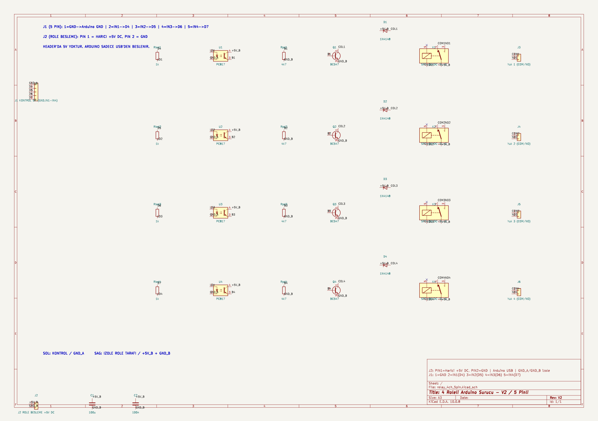
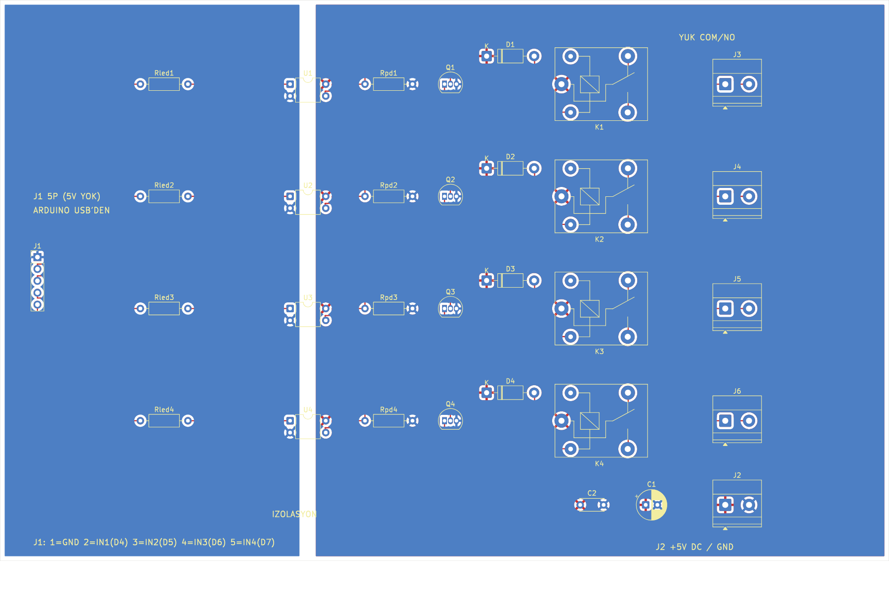
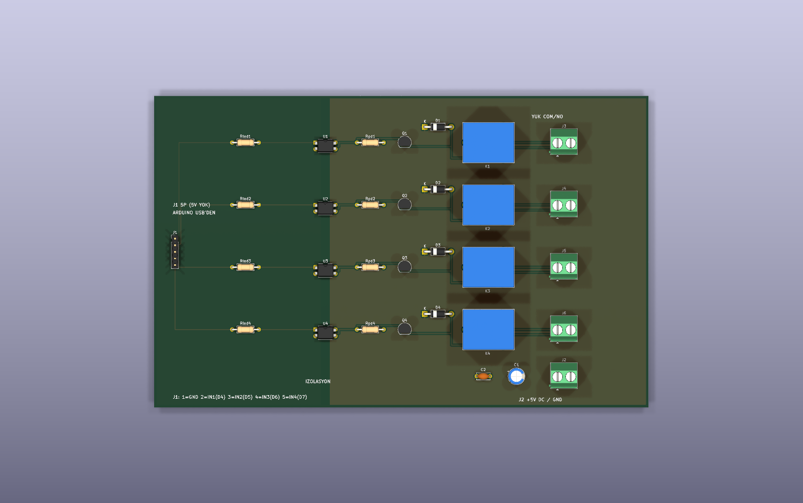
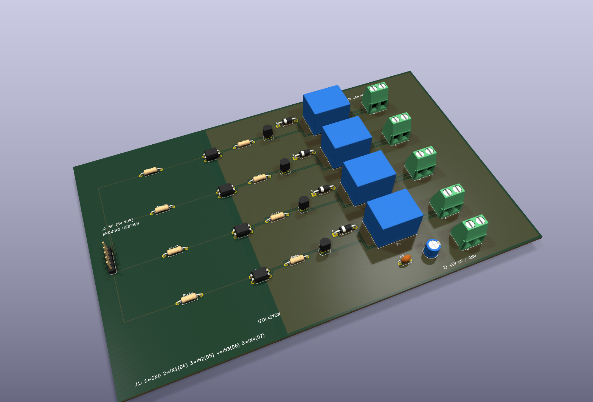
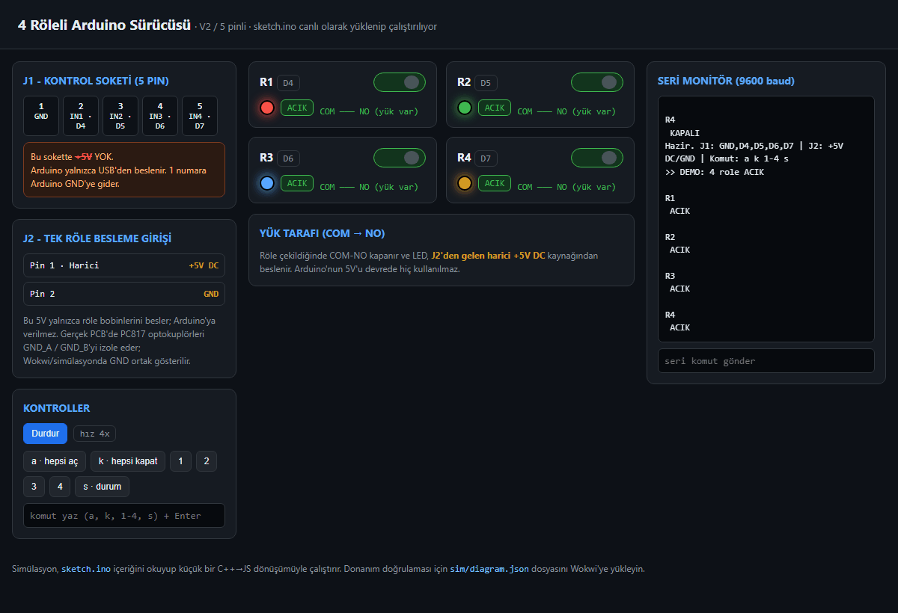

PİN HARİTASI (ONAYLANAN DÜZEN)
| J1 — Yeni 5 pinli kontrol soketi | J2 — Tek röle besleme girişi | ||
|---|---|---|---|
| Pin 1 | GND → Arduino GND | Pin 1 | Harici +5 V DC |
| Pin 2 | IN1 → Arduino D4 | Pin 2 | GND |
| Pin 3 | IN2 → Arduino D5 | ||
| Pin 4 | IN3 → Arduino D6 | ||
| Pin 5 | IN4 → Arduino D7 | ||
J1'de 5V yoktur. Arduino yalnızca USB'den beslenir. J2'den gelen +5V yalnızca röle bobinlerini besler; Arduino'ya verilmez. PC817 optokuplörleri GND_A ve GND_B'yi izole eder (PCB'de 2.5 mm bakırsız bariyer).
1 - Devre Şeması

Kaynak: kicad/relay_4ch_5pin.kicad_sch · ERC: 0 ihlal · PDF/SVG: kicad/cikti/
2 - Baskı Devre (PCB)

2 katman · 190 × 120 mm · X=64.5–67.0 mm bakırsız izolasyon bariyeri · DRC: 0 ihlal
3 - 3B Görünüm (üstten)

4 - 3B Görünüm (izometrik)

5 - Çalışan Simülasyon (sketch.ino yüklenmiş)
Aşağıdaki canlı simülasyon sim/sketch.ino dosyasını okuyup çalıştırır (D4–D7). Rölelerin açılışını ve seri monitörü izleyebilirsiniz. Hız etiketine tıklayarak hızı değiştirebilirsiniz.
6 - Simülasyon Kaydı (GIF)

Konnektör özeti
- J1 (1x05): GND, D4, D5, D6, D7 — sıra 1→5 yukarıdaki tabloda
- J2 (1x02): +5V DC, GND — röle beslemesi
- J3–J6 (1x02): röle 1–4 yük terminalleri, COM / NO
- Yük LED'leri J2'nin +5V DC kaynağından beslenir; Arduino 5V kullanılmaz.